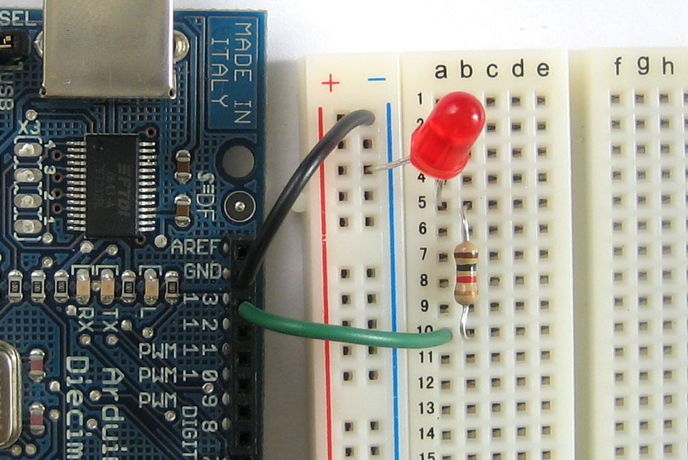
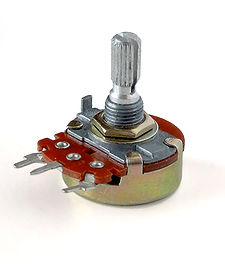
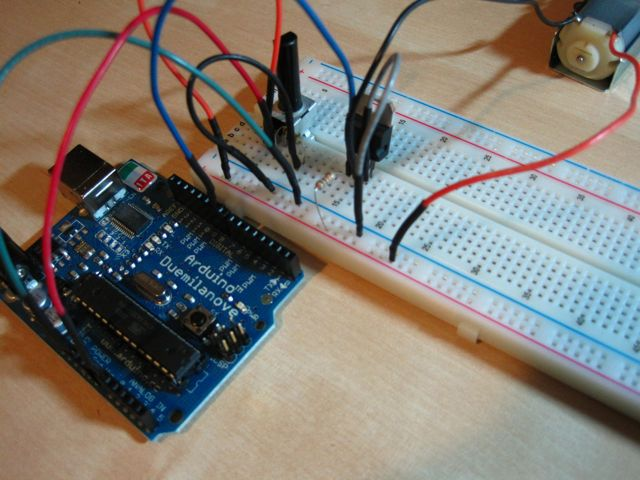
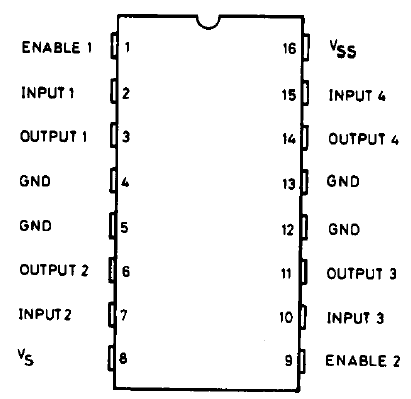
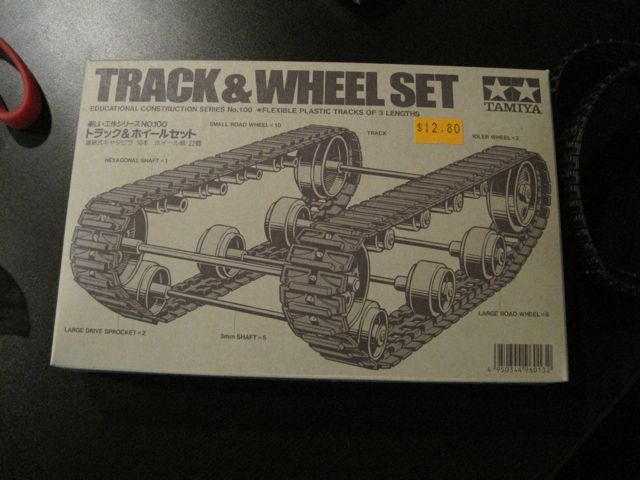

| space, → | next slide |
| ← | previous slide |
| d | debug mode |
| ## <ret> | go to slide # |
| c | table of contents (vi) |
| f | toggle footer |
| r | reload slides |
| z | toggle help (this) |

MOSFET means "metal-oxide-semiconductor field-effect transistor". It's a special type of transistor that operates based on field-effect principle. This means that electricity will flow through a piece of semiconductor material (between the Drain and Source pins) when a voltage is applied to the Gate pin. As the Gate is insulated from the rest through a layer of metal oxide, there is no current flowing from Arduino into the MOSFET, making it very simple to interface. They are ideal for switching on and off large loads at high frequencies. (Definition from Getting Started with Arduino by Make: Projects)

Potentiometers provide a variable resistance which can than be read.
Use analogRead() to get the value, map() it relative to PWM values, then analogWrite() it to a PWM pin.
CODE PLEASE?
int potpin = 0; int mosfetPin = 9; int val;
void setup() { Serial.begin(9600); // setup serial }
void loop() { val = analogRead(potpin); val = map(val, 0, 1023, 0, 255); Serial.println(val); analogWrite(mosfetPin, val); delay(15); }


| Pin 1 | Pin 2 | Pin 7 | Function |
| High | Low | High | Turn clockwise |
| High | High | Low | Turn anti-clockwise |
| High | Low | Low | Stop |
| High | High | High | Stop |
| Low | Not applicable | Not applicable | Stop |
// Pin 2 on the L293D, can also accept values from a PWM pin. int motor1Pin1 = 3; int motor1Pin2 = 4; // pin 7 on L293D int motorEnablePin = 9; // pin 1 on L293D int potPin = 0; int pot_val;
void setup() { Serial.begin(9600); // setup serial
pinMode(motor1Pin1, OUTPUT); pinMode(motor1Pin2, OUTPUT); pinMode(motorEnablePin, OUTPUT);
digitalWrite(motorEnablePin, HIGH); }
void loop() { pot_val = analogRead(potPin);
Serial.println(potval); potval = map(potval, 0, 1023, 0, 254); Serial.println(potval);
analogWrite(motor1Pin1, pot_val); digitalWrite(motor1Pin2, LOW);
delay(15); }
